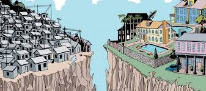

Diariamente o noticiário brasileiro reúne casos que exemplificam como a desigualdade social atinge a sociedade e impede que uma grande parcela da população consiga melhorar sua qualidade de vida. Educação e saúde de qualidade e saneamento básico são alguns dos pontos que mostram como ricos e pobres tem acessos distintos a direitos básicos. A isso, somam-se ainda oportunidades de trabalho e acesso a cultura e lazer. A desigualdade social é um problema histórico e estrutural, herança do nosso período colonial e que funciona como um ciclo que se alimenta com o passar dos anos, sustentado pela má distribuição de renda. Ou seja, determinados indivíduos se encontram em condições estruturalmente mais vantajosas do que outros, e esta posição os permite acumular ainda mais riquezas em detrimento dos demais. Porém, há uma série de medidas que podem (e devem) ser adotadas para diminuir o abismo entre as classes com maior e menor poder aquisitivo...
